IronViz Feeder Resources 2024
Hi all,
My 3rd time entering Iron Viz....
The past two times entering IronViz I've tended to write a mini blog on some of the aspects. They've never really covered anything to do with the mark scheme but solely looked at a few techniques that were used within the viz that may inspire your own work. This will be the same.
If you'd like to view the visual you can find it at the top of the page. There are 8 different views to the visual.
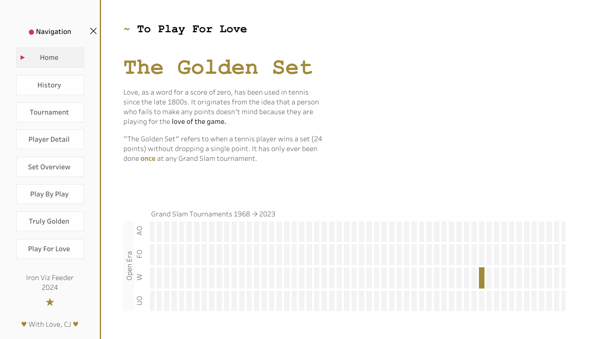
- DATA PREP
In previous years, I've tended to use a variety of python scripts to manipulate a lot of the data. That or just sucked it up and amended data in excel. After 2 years of playing around with Alteryx I built what was quite a scrappy workflow. (I'm too embarrassed to upload it to Github but you can see from the screenshot the various outputs) The original data that I use ended up coming from Jeff Sackmanns public repository on Github. You can see it credited within the visual.
Some stand out transformations include:
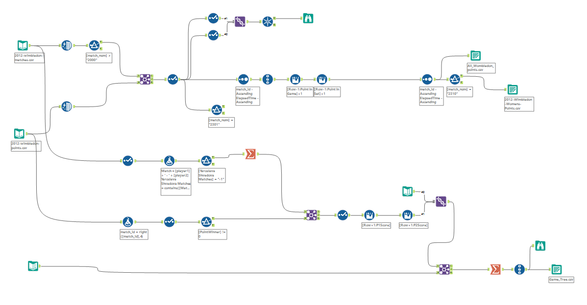
- Taking a lot of Game Tree logic from a previous blog I wrote and adapting it to not look at server but to look at game and set combinations. You can read about the game tree's here.
- For row point data, it was often the case I needed to know who the winner of the next point was.
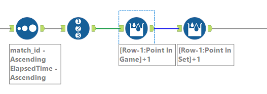
- Adding in information such as current overall score, or changing a "Game" or "Set" flag to be a running count.
- Small subsets of data where there was a need to glue the names together to find specific match details.
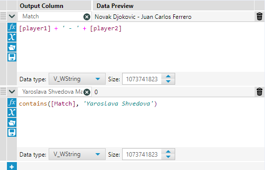
I think generally to speak of data prep over the years, this year was comparatively easier than my 2022 feeder (which had a lot of sentiment analysis, text cleaning and needing to use different python packages). Something to consider if you do enter and what tools you do feel comfortable using, it meant more time in Tableau visualising relative to cleaning.
The only time I used actual code was a copy and paste job from my old tutorial on circular packing.
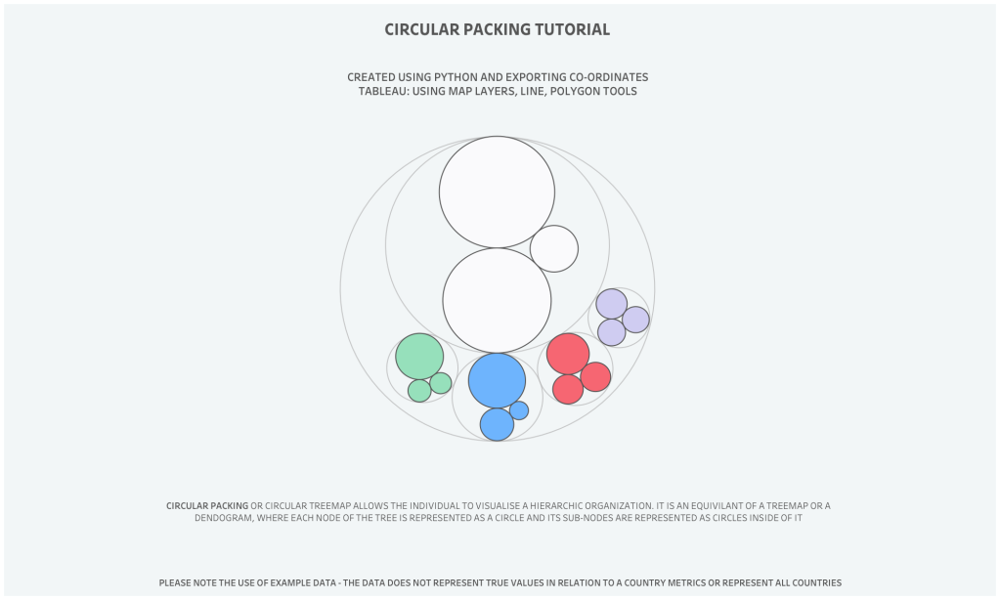
3. LEVERAGE WORKBOOKS AND BLOGS
I think with everyone's entry, you tend to pick things up from the community over time. I know personally, I've picked up tips and tricks that have helped improve my work.
I wanted to point out a few more subtle influences of the dashboard.
I first learnt how to use dynamic zone visibility from work of Sam Parsons, in addition to using a show hide container to create collapsible containers. He has some wonderful advanced tutorials on his Youtube.
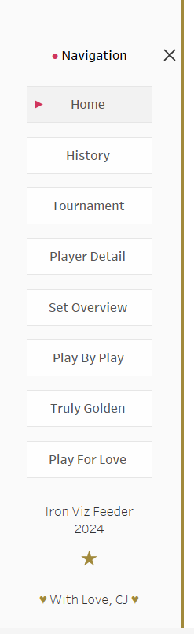
If you fancy something simpler, by all means I have some tutorials, here.
Next up was a bit more of a creative chart. Of course I can't enter Iron Viz without building something not seen before.
I would say the main inspiration behind this was Kevin Flerlage and Brian Moore. It is a bit of a mix between circular packing and rank charts. You can view my tutorial on circular packing here.
I love the idea of combining different tutorials together to create something new.
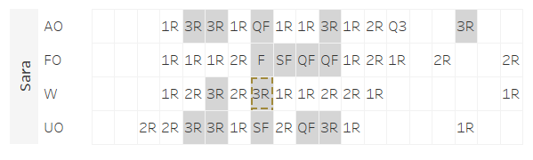
This chart above is inspired actually by WorkOut Wednesday. Remember that really tough one set by Luke Stanke. I ended up writing about reference borders here.
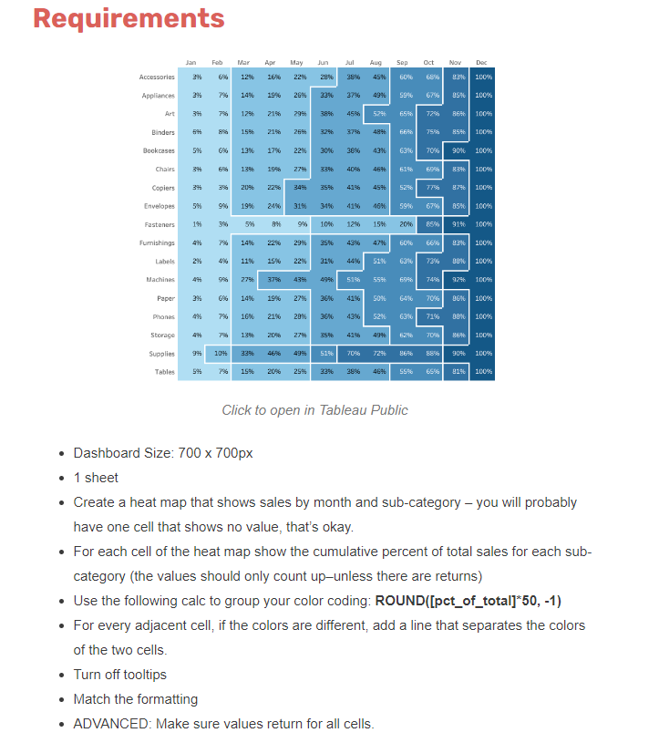
Wirh the H2H chart there are a whole bunch of resources out there in terms of creating an arc chart. My favourite go to's for this are usually Brian Moore, or Toan Hoang. Given I didn't need any "actual" data / information in, I could easily add this into the container and account for padding and adjustments to the Y axis to get it to align to the text.
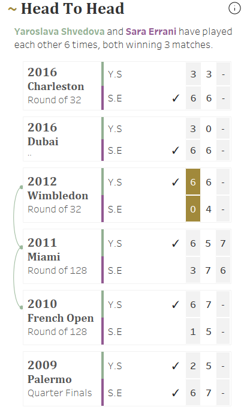
The final two parts of inspiration can be seen on the play by play stage
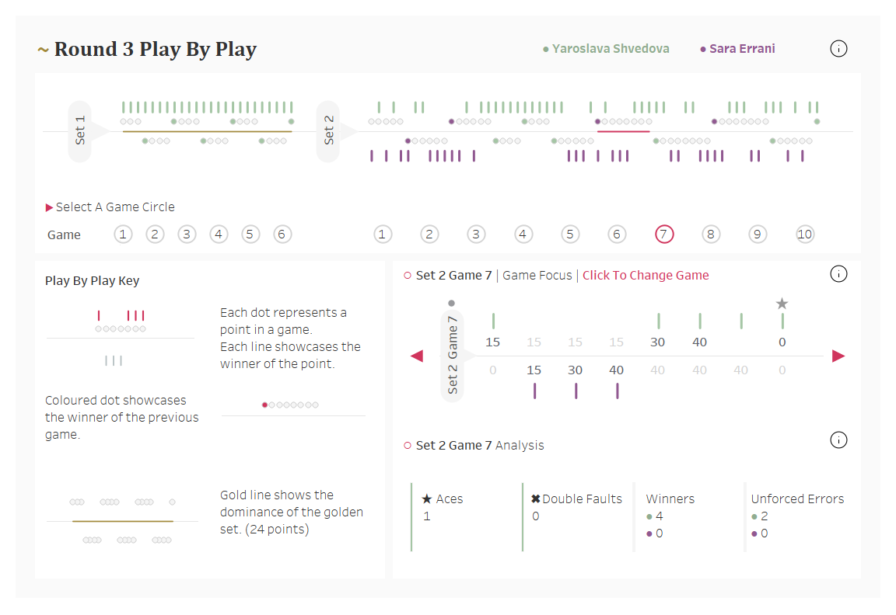
I am of course an avid Tennis fan and one of my favourite visuals comes from Adam Green who built this amazing visual looking at Emma Radacanu.
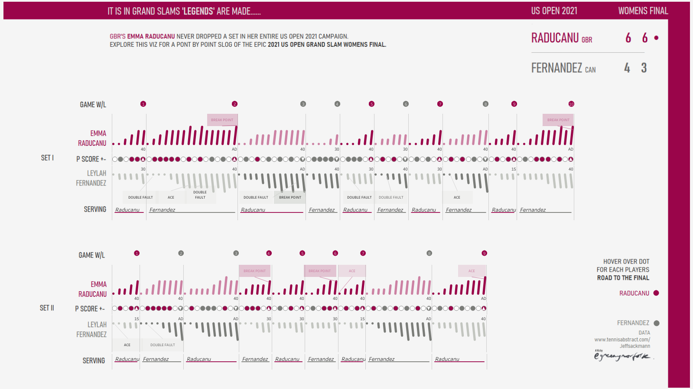
I wanted to add my own stamp to the idea so built it in one sheet, as well as added in a zoomed in interactivity element.
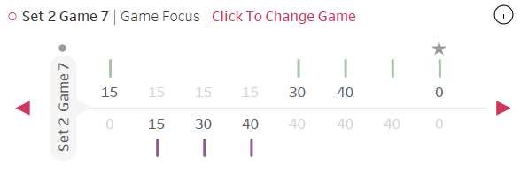
I ended up actually going and digging through some of Autumn Battani's work. I remembered she had built an amazing card switch in one of her call center dashboards. Of course, so different in design, but helped tremendously when thinking about logic of updating parameters and calculations.
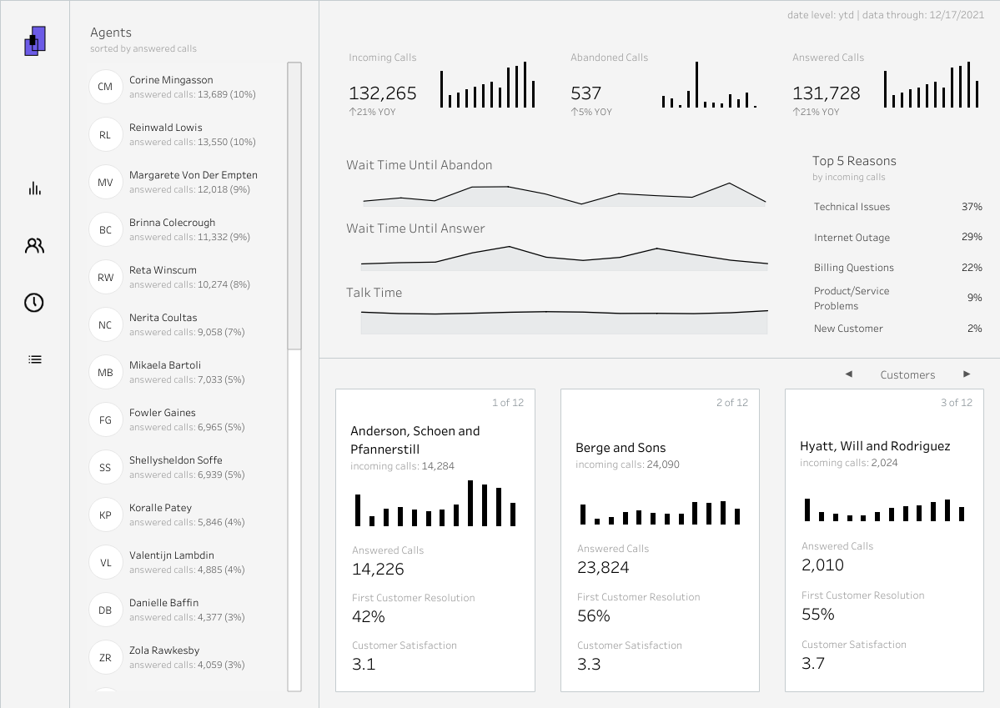
4. A SMALL FEEDBACK GROUPS ARE BETTER
You don't need to necessarily hear too many opinions, just a select few who will take the time to give you honest feedback. I sometimes think it's a bit of a trap asking too many people.
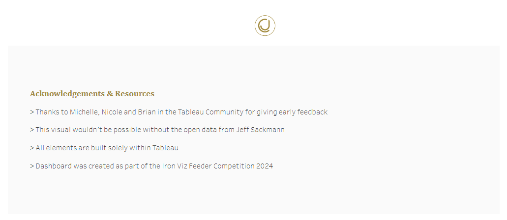
For me, this year I grabbed 15 minutes with Nicole, Michelle and Brian. I would say they saw it at a stage where I was 70% complete so was able to give some good thoughts around the flow of the visual in terms of ordering of the pages (Rarity, history, tournament, player, match etc). Once you've been in the detail for so long, it felt really beneficial to be pulled back out to look at how the different sections sync together. This was particularly important to me given I was trying to make my charts do the talking.
Another piece of feedback I thought was particularly handy was the idea to put the how to read on the page for more complex visuals. Understandably people don't want to have to click / potentially miss hover material and not understand the more custom chart types.
The final big hitter (whey, punny right) was Brian mentioned that my Set Overview page would be nice to have both the non aggregated (each game) as well as aggregated view (set).
My instant reaction was ... "I wish you didn't tell me that because I'm not sure I have enough time to figure it out!" but funnily enough a few tweaks to my Alteryx flow allowed me to group by game too and bring that in as a separate layer - thanks for the idea Brian!
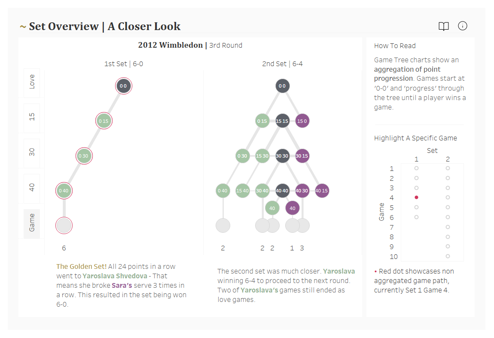
5. ADOBE COLOUR
I played around with a colour tool on Adobe, where I also created my palette to try and make sure it was suitable for all eyesight’s. It is always my go to since coming across it years ago.
You can put it through a colour blind simulator. The colours I aimed for was to amplify the idea of the two players through a Wimbledon-esque colour scheme, as well as the gold as a highlight ability for the specific game and set. Other than that you'll see more neutral colours to support the visual in terms of the whites and greys on the page.
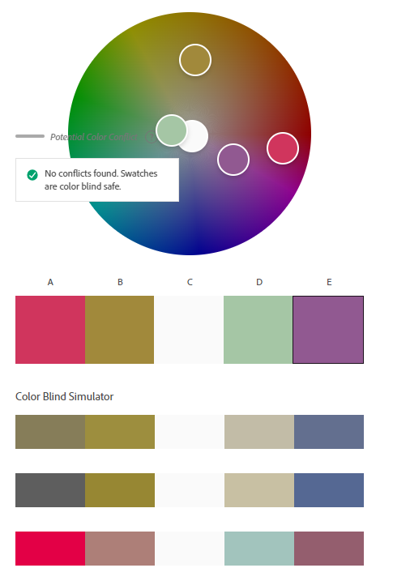
CJ Round-Up:
Below are a few of my favourite views from the workbook as a whole.
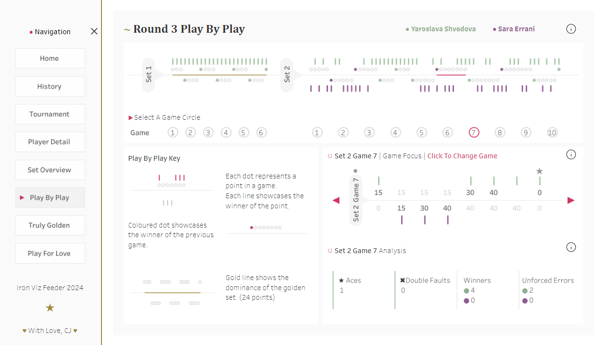 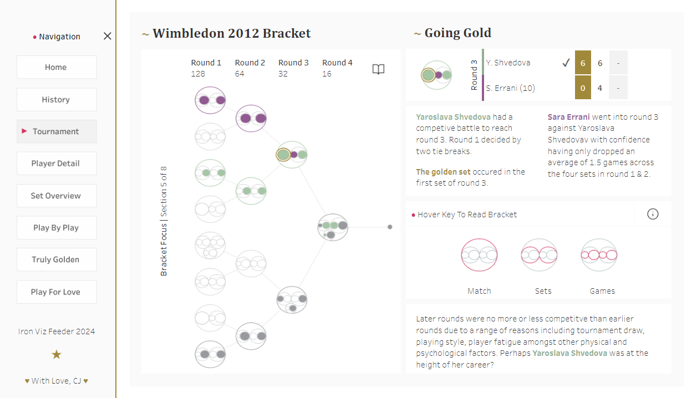 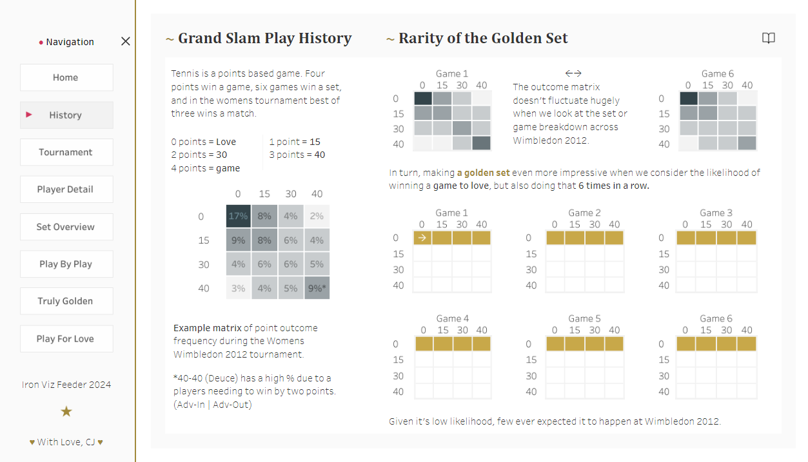
Looking forward to celebrating next years contestants. Iron Viz has a very special place in my heart.
LOGGING OFF,
CJ